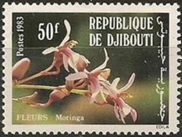
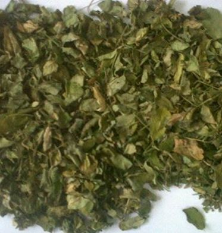

Passionné par les possibilités de lutter contre la famine et sur la recherche dans les aliments de substitution, j’ai eu le bonheur de pouvoir échanger dernièrement avec mon ami népalais, Hement Raj Khapale, sur la culture du Moringa. Hement Raj Khapale, président de la Climate Care Campaign In Nepal cultive le Moringa et s’attache à faire la promotion de cet arbre aux vertus exceptionnelles. Auriez-vous imaginé qu’un arbre puisse apporter une réponse simultanée aux deux problèmes majeurs du XXIe siècle : la faim dans le monde et la pollution des eaux ? C’est pourtant le cas avec le Moringa.
Peut-être, en avez-vous entendu parler sous une autre appellation car l’arbre Moringa est connu sous différents noms selon les pays. Ainsi il se nomme : aux Philippines, Malunggay ; au Bangladesh, Sajina ; en Indonésie, Kelor, en Chine et à Taïwan, la mu ; en Inde, sahjan, murunga ou encore moonga…
Le Moringa est désormais largement cultivé non seulement au Népal mais dans d'autres pays comme les Philippines, l'Inde, le Ceylan, la Thaïlande, la Birmanie, Singapour, Taiwan, Antilles, Madagascar, Éthiopie, Somalie, Afghanistan, Pakistan, Asie tropicale, Bangladesh, Amérique latine, les Caraïbes et les îles du Pacifique. Il est un peu plus rare en Afrique mais on le trouve toutefois aussi en Ethiopie, en Somalie et, depuis une dizaine d’années, en République de Djibouti, où j’ai pu le découvrir durant mon séjour de 2009 à 2011.
Il existe treize espèces différentes de Moringa mais la meilleure espèce connue et la plus cultivée est la Moringa oleifera, une espèce originaire des Philippines.
Dans le Moringa, tout est bon ! Feuilles, fruits, graines, racines, écorce et huile de graines possèdent un intérêt nutritionnel, thérapeutique ou encore cosmétique. Les différents constituants du Moringa sont ainsi connus pour avoir, entre autres, des propriétés anti-diabétiques, anti-hypertension, anti-inflammatoires, anti-microbiennes, anti-virales, anti-parasitaires, et anti-âge. Pas étonnant que l'arbre de Moringa (Malunggay) soit aussi connu sous le nom de « Plante miracle ».
L'Arbre Moringa commence à fleurir après environ 8 mois à un an et continue à fleurir toute l'année par la suite. Les fleurs de Moringa sont comestibles ; elles ont un goût de champignon et sont riches en calcium et en potassium.
Les fleurs du Moringa (et les racines aussi) contiennent un composé appelé pterygospermin qui a de puissants antibiotiques et des effets fongicide. Il est très efficace dans le traitement du choléra.
Des capsules Moringa émergent des grappes de fleurs.
Un arbre Moringa peut produire 300 à 400 capsules par an et un arbre mature peut produire jusqu'à 1,000 capsules. Un module de semences peut contenir 2 à 26 graines par nacelle. Les jeunes capsules Moringa sont comestibles et leur saveur délicate est comparée aux asperges.
UN SUPER ALIMENT AUX VERTUS REVITALISANTES ET NUTRITIVES
Récemment, le Moringa a été identifié par le World Vegetable Center (Taiwan) comme le légume au plus fort potentiel nutritionnel parmi 120 espèces alimentaires étudiées. Contenant tous les éléments nutritifs nécessaires à la vie, il est utilisé dans les préparations médicinales depuis des siècles. La tradition indienne de l’ayurvéda lui reconnaît des vertus pour combattre ou soulager plus de 300 maladies !
De toutes les parties du Moringa, les feuilles sont utilisées le plus. Que contiennent exactement ces feuilles ? Sources exceptionnelles de vitamines A et C, elles sont également pleines de vitamines B et l’une des meilleures sources végétales en minéraux. Leur teneur en calcium est très élevée : à poids égal, elles en contiennent 17 fois plus que le lait !
Poursuivons les comparaisons : les feuilles de Moringa comptent 15 fois plus de potassium que les bananes, 25 fois plus de fer que les épinards, 9 fois plus de protéines que le yaourt, et très peu de phosphore et de lipides.
Pour couronner le tout, elles recèlent les 8 acides aminés dits essentiels (isoleucine, leucine, lysine, méthionine, phénylalanine, thréonine, tryptophane, valine). Essentiels, parce que le corps humain ne les fabrique pas lui-même et qu’ils sont indispensables au bon fonctionnement de l’organisme. Voilà pourquoi ils sont présents dans toutes les formes de cuisine traditionnelle. Hélas, cette sagesse s’est largement perdue avec l’alimentation moderne...
Le contenu nutritionnel des feuilles de Moringa fraîches par rapport aux aliments communs est encore plus parlant par le schéma ci-contre.
Il faudrait toutefois encore ajouter aussi à ce schéma les 50 fois la vitamine B3 de cacahuètes ; 4 fois la vitamine B de porc ; 63 fois le potassium du lait ; 50 fois la vitamine B2 de bananes ; 13 fois la vitamine A d'épinards…
La richesse en acides gras du Moringa se trouve dans les graines : acide oléique (oméga 9), acide palmitoléique (oméga 7). Ces acides gras agissent de façon préventive contre les maladies cardiovasculaires, en faisant grimper le bon cholestérol et baisser le mauvais, en évitant le syndrome métabolique conduisant à l’obésité. Ils ont aussi une action de diminution du glucose sanguin, particulièrement intéressant pour les personnes à tendance diabétique.
En médecine ayurvédique, le Moringa est bien connu depuis des siècles pour les vertus antiseptiques de sa sève en usage externe, de son écorce bouillie contre les calculs rénaux mais aussi de sa racine, riche en polyphénols, contre le paludisme, l’asthme ou les douleurs articulaires.
Le Moringa est utilisé par les médecins pour traiter le diabète en Afrique de l'ouest et une forte pression artérielle en Inde. Il est également indiqué qu'il contient des propriétés qui aident les rhumatismes, l'arthrite et d'autres maladies articulaires, ainsi que des stimulants cardiaques et circulatoires. Des études biologiques ont également confirmé que Moringa a des proporiétés antispasmodique et diurétiques.
Les feuilles de Moringa sont donc conseillées pour tous, mais elles siéent particulièrement aux personnes en situation de carence, de fatigue, ainsi qu'aux sportifs. Elles leur prodiguent une énergie conséquente sans causer en retour les désagréments que peuvent occasionner les sucres lents dans l’organisme, lorsqu’ils sont absorbés en trop grande quantité.
Lorsque les feuilles de Moringa sont séchées et se sont transformé en forme de poudre, sa puissance augmente. Une feuille de Moringa séchée contient trois (3 x) à cinq (5 x) fois plus de nutriments qu'un Moringa frais, comme le confirment les chercheurs et l'analyse de laboratoire.
La poudre de feuille séchée augmente ses concentrations minérales en raison de la perte d'eau. Un autre avantage de la poudre de feuille séchée est qu'il peut être stocké dans une durée de conservation plus longue.
La poudre de feuilles séchées est un ajout nutritif aux aliments pour bébés, aux soupes, aux légumes et à d'autres préparations alimentaires sans altérer le goût de la nourriture.
LE MORINGA ET SES VERTUS COSMÉTIQUES
L'huile extraite des graines de Moringa a de remarquables vertus hydratantes et réparatrices, utiles pour accélérer la cicatrisation de la peau et pour ralentir le vieillissement de la peau et l’apparition de rides. L'industrie cosmétique s’intéresse de près à ses propriétés permettant d’éviter la sécheresse des muqueuses.
UN PURIFICATEUR D’EAU
Le Moringa sert aussi à purifier l’eau trouble de certaines régions. Le tourteau obtenu lors de l’extraction de l’huile de Moringa contient une protéine active qui neutralise les matières colloïdales dans les eaux boueuses ou sales, dissipant 90 % à 99 % des bactéries. Il constitue un coagulant de premier ordre pour le traitement de l’eau des rivières avec un haut niveau de matériel solide en suspension (>100 UTN-unités de turbidité néphélométrique).
Mon ami Hement Raj Khapale dans son exploitation
Le Moringa oleifera se présente essentiellement en poudre et en gélules vendues en magasin diététique et magasins bio, dans un emballage à l’abri de l’air et de la lumière.
Attention cependant à l’engouement que connait cette plante dite « miracle » vue comme un « alicament » : des spéculateurs tentent d’en faire de la culture intensive, notamment en Tunisie, pour pouvoir exporter la plante transformée et conditionnée pour la vendre à prix d’or aux « bobos » occidentaux en saccageant la terre et en détournant l'eau !
N’oublions pas qu’il s’agit d’une plante qui permet une culture vivrière nutritive dans des pays pauvres, alors si vous l’achetez veillez à ce que le produit soit estampillé commerce équitable et surtout 100 % naturel ou 100 % pure poudre, sans additifs ni produits chimiques quelconques.
F.M.
L'utilisation des plantes pour se soigner doit se faire en demandant préalablement conseil à un médecin, pharmacien ou herboriste. Les femmes enceintes, les personnes atteintes de maladies chroniques et graves ou prenant des médicaments, doivent consulter un médecin avant de faire de l'automédication pouvant entrainer des effets indésirables, notamment des interactions médicamenteuses.

Partager cette page